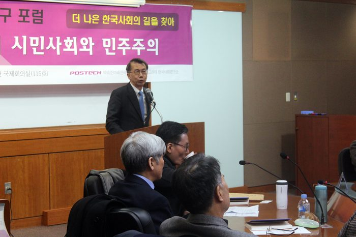
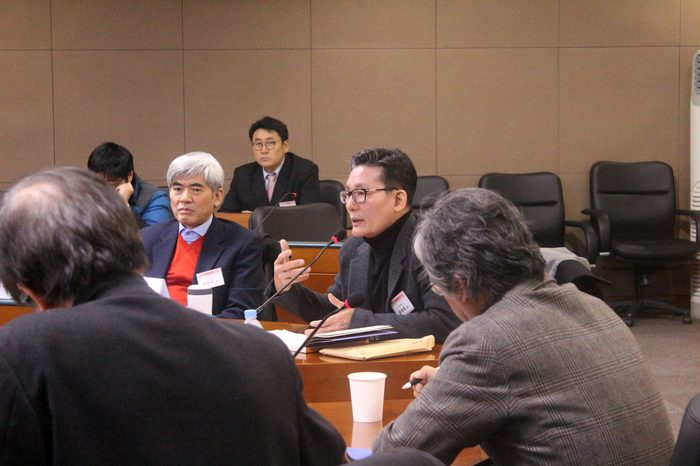
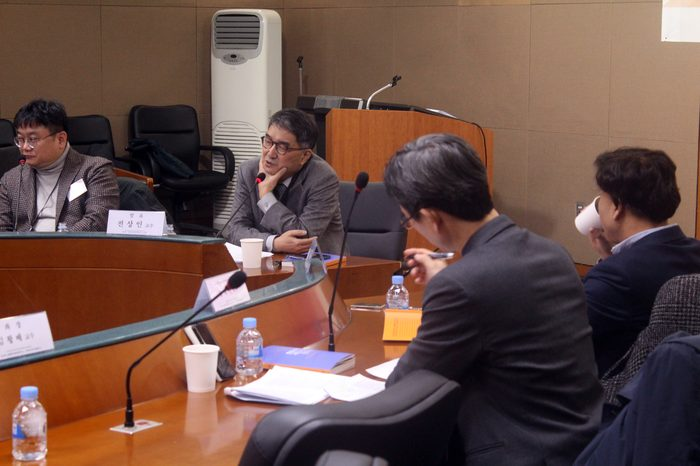
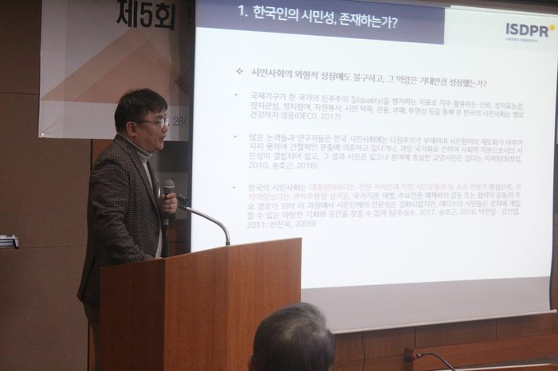
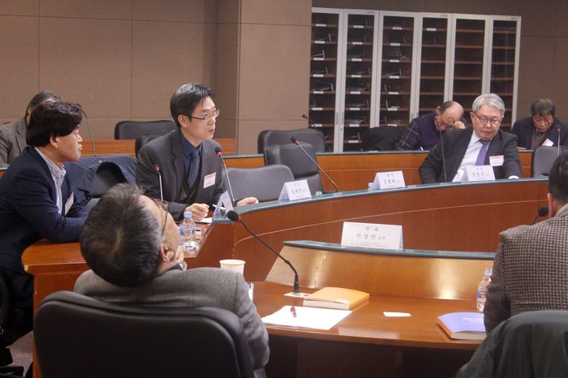
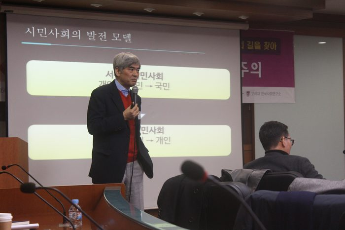
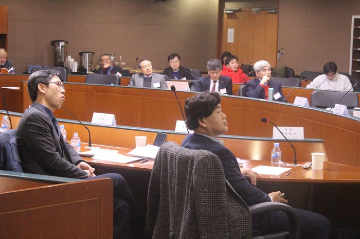
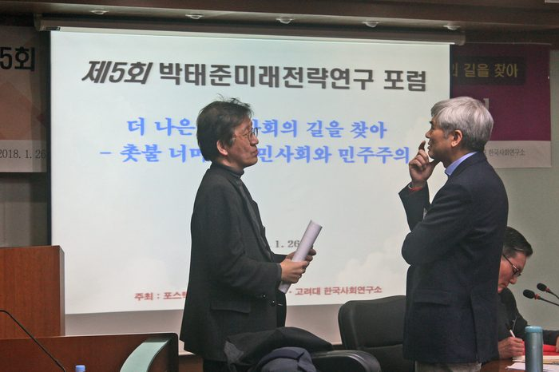
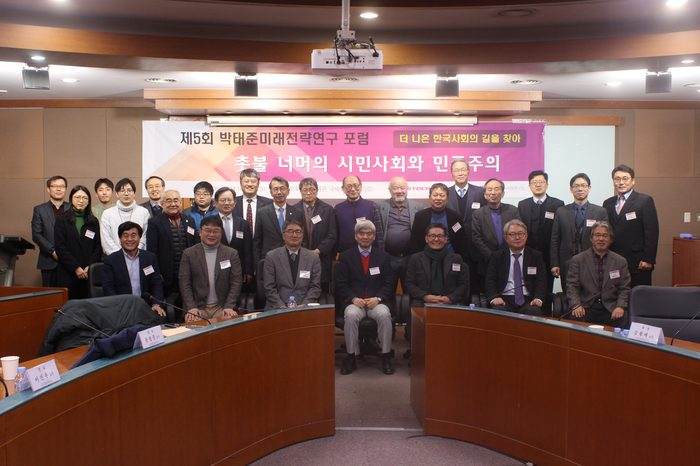

행사개요
행 사 명 : 제5회 박태준미래전략연구 포럼
주 제 : 더 나은 한국사회의 길을 찾아 - 촛불 너머의 시민사회와 민주주의
기 간 : 2018년 1월 26일(금) 14:00~17:20
장 소 : 고려대학교 국제관 115호 국제회의실
프로그램
12018-02-02
| 시간 | 프로그램 |
|---|---|
| 14:00~14:20 | 리셉션 |
| 14:20~14:30 | 개회사 : 김병현 박태준미래전략소장 축 사 : 박길성 고려대 교육부총장 |
| Session Ⅰ. 좌장: 김왕배 교수(연세대) | |
| 14:30~14:50 | 발제Ⅰ. 윤평중 교수(한신대) 삶의 정치와 성찰적 시민사회 - 진리정치 비판 |
| 14:50~15:10 | 발제Ⅱ. 이진우 교수(포스텍) 우리는 어떻게 시민이 되는가? - 성숙한 시민사회의 실천철학 |
| 15:10~15:30 | 토론 : 정일준 교수(고려대) |
| 15:30~15:50 | 휴 식 |
| Session Ⅱ. 좌장: 윤인진 교수(고려대) | |
| 15:50~16:10 | 발제Ⅲ. 전상인 교수(서울대) 마음의 습관과 한국의 민주주의 |
| 16:10~16:30 | 발제Ⅳ. 김석호 교수(서울대) 한국인의 습속과 시민성, 그리고 민주주의 |
| 16:30~16:50 | 토론 : 심재만 교수(고려대) |
| 16:50~17:20 | 종합토론(질의응답) 폐회사: 김병현 박태준미래전략소장 |
연사
윤평중
1956년생. 미국 남일리노이 주립대학교에서 철학박사 학위를 받았으며 한신대학교 대학원장 및 학술원장 역임. 캘리포니아 대학교(버클리) 역사학과 방문학자, 미시간 주립대학교 철학과 객원교수, 뉴저지 럿거스 대학교 정치학과 풀브라이트 학자로 연구. 2012년 이후 현재까지 조선일보에 ‘윤평중 칼럼’을 쓰고 있고 2014년 이후 지금까지 KBS 객원해설위원. 현재 한신대학교 철학과 교수. 저서로 『푸코와 하버마스를 넘어서』 『포스트모더니즘의 철학과 포스트마르크스주의』 『담론이론의 사회철학』 『논쟁과 담론』 『극단의 시대에 중심잡기』 『윤평중 사회평론집』 『급진자유주의 정치철학』 『시장의 철학』 『국가의 철학』 등이 있고, 공저로는 『주체개념의 비판』 『니체가 뒤흔든 철학 100년』 『디지털 시대의 민주주의와 포퓰리즘』 『공정과 정의사회』 『신일철, 그의 철학과 삶』 등이 있음.
이진우
1956년 생. 독일 아우크스부르크대학에서 철학 석사 및 박사학위를 받음. 계명대학교 철학과 교수 및 동 대학 총장, 한국니체학회 회장, 한국철학회 회장, 포스코교육재단 이사장, 포스텍 인문사회학부장 등 역임. 현재 포스텍 인문사회학부 석좌교수. 저서로 『의심의 철학』 『니체의 인생강의』 『니체, 실험적 사유와 극단의 사상』 『니체의 차라투스트라를 찾아서』 『테크노 인문학』 『프라이버시의 철학』 『도덕의 담론』 『이성은 죽었는가』 『한국 인문학의 서양 콤플렉스』 『탈현대의 사회철학』 등이 있음.
전상인
1958년생, 미국 브라운대학에서 사회학 박사학위를 받음. 한림대 사회학과 교수, 워싱턴주립대 방문교수, 한국미래학회 회장 역임. 현재 서울대 환경대학원 교수. 저서로 『공간으로 세상읽기: 집, 터, 길의 인문사회학』 『편의점 사회학』 『아파트에 미치다: 현대한국의 주거사회학』 『우리 시대의 지식인을 말한다』 『고개 숙인 수정주의: 한국현대사의 역사사회학』 『세상과 사람 사이』 등이 있음.
임지현
1959년 생. 서강대학교에서 역사학과 철학을 전공하고, 동대학원에서 『맑스·엥겔스와 민족문제』로 박사학위를 받았다. 한양대학교 사학과를 거쳐 현재 서강대학교 사학과 교수 겸 트랜스내셔널인문학 연구소 소장으로 재직중이다. 지은 책으로는 『민족주의는 반역이다』 『그대들의 자유, 우리들의 자유-폴란드 민족운동사』 『세계사편지』 『역사를 어떻게 할 것인가』 『이념의 속살』 등이 있으며, 팔그레이브 출판사에서 총 6권의 ‘Mass Dictatorship’ 시리즈를 책임 편집했다. ‘대중독재’, ‘일상적 파시즘’, ‘변경사’, ‘트랜스내셔널 히스토리’ 등의 인문학적 패러다임 위에서 한국사회에 대한 문제제기를 꾸준히 해왔다. 미국, 독일, 폴란드, 영국, 일본의 유수한 대학 및 연구기관에서 초청교수와 연구원을 역임했으며, 현재 ‘글로벌 히스토리 국제네트워크(NOGWHISTO)’ 회장, ‘토인비재단’, ‘세계역사학대회’ 등 국제학회의 이사로 있다.
김석호
1972년 생. 미국 시카고대학교에서 사회학 박사학위를 받음. 현재 서울대학교 사회학과 교수. 서울대학교 사회발전연구소장, 동아시아사회조사(East Asian Social Survey) 연구책임자, 국가통계위원회 위원. 저서 및 편서로 『Tocqueville Can Karaoke?』 『압축성장의 고고학』 『한국인의 정체성: 변화와 연속, 2005-2015』 『통계를 통해서 본 광복 70년』 『노동이주 추이와 미래 사회통합정책의 과제』 『서베이조사방법론』 『2012년 한국대선분석』 『2012년 한국총선분석』 『2014년 지방선거분석』 『한국의 사회동향』 등이 있고, 주요 논문으로 「Patterns of Social Support Networks in Japan and Korea」 「한국 청년 꿈-자본 개념의 측정」 「Quality of Civil Society and Participatory Democracy in ISSP Countries」 「전국선거와 지방선거에서 유권자들은 다른 이유로 투표하는가?」 「What Made the Civic Type of National Identity More Important among Koreans?」 「Voluntary Associations, Social Inequality, and Participatory Democracy in the United State and Korea」 등이 있음.
참석자
내부 인사: 김도연 포스텍 총장, 김승환 대학원장, 박태준미래전략연구소 연구위원
외부 인사: 정인재 서강대학교 철학과 명예교수, 이정상 서울대 교수 외 외 다수
대학(원)생 에세이 참가자
내용
박태준미래전략연구소는 우리 사회의 더 나은 내일을 위한 방안에 대하여 연구한 결과를 사회에 전파하고 공유하고자 매년 포럼을 개최해오고 있다.
지난 2017년 더 나은 한국사회로 가는 길에 대한 연구의 결과로 1부에는 윤평중 한신대 사회학과 교수가 ‘삶의 정치와 성찰적 시민사회 – 진리정치 비판’을 주제로, 이진우 포스텍 석좌교수는 ‘우리는 어떻게 시민이 되는가? - 성숙한 시민사회의 실천철학’을 주제로 발표했으며, 토론에는 고려대 정일준 교수가 참여했으며, 2부에서는 전상인 서울대 교수가 ‘마음의 습관과 한국의 민주주의’를 주제로, 김석호 서울대 교수는 ‘한국인의 습속과 시민성, 그리고 민주주의’에 대한 내용으로 발표했으며, 토론에는 심재만 고려대 교수가 참석했다.
본 연구의 내용은 ' 촛불 너머의 시민사회와 민주주의 - 미래전략연구총서 9'로 출간되었다.








